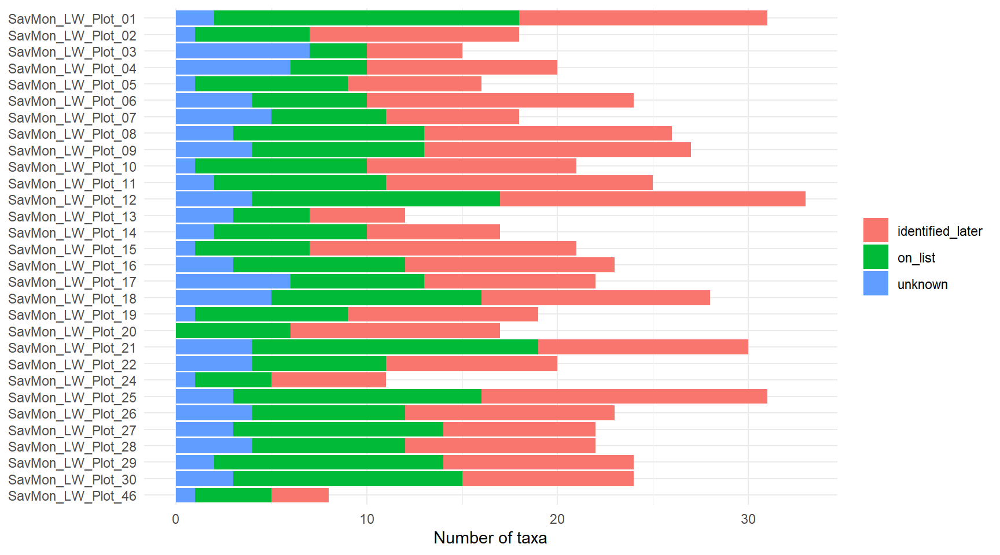
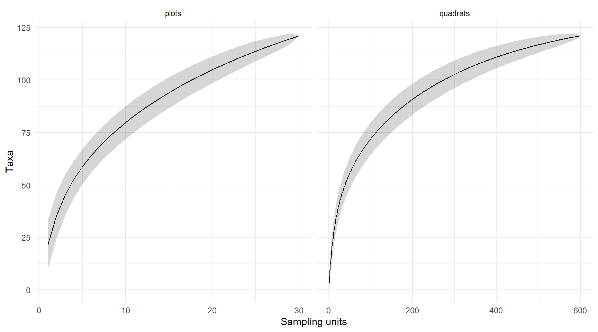

Code
library(tidyverse)
library(janitor)
library(here)
library(sf)
library(leaflet)
library(vegan)
library(DT)
here::i_am("scripts/quarto/vegetation_qaqc.qmd")Savanna Monitoring Pilot (SAVMON), Lewa, baseline 2026
library(tidyverse)
library(janitor)
library(here)
library(sf)
library(leaflet)
library(vegan)
library(DT)
here::i_am("scripts/quarto/vegetation_qaqc.qmd")The ODK exports are joined into four tidy tables (surveys, quadrats, species observations, transects) and run through QA/QC checks derived from the SOPs. Each check is one filter that appends rows to a single flags table; no data are modified. Submissions rejected in ODK Central are reported but excluded from the summaries. Thresholds live in rules so they can be tuned.
rules <- list(
quadrats_per_plot = 20L,
transect_m = 50, transect_tol_m = 10, # SOP: 50 m belt transect
gps_max_m = 5, # SOP: geopoint accuracy <= 5 m
midpoint_shift_m = 25, # SOP: midpoint moved at most 25 m
quadrat_offset_m = 15, # 2.5 m belt + handheld-GPS error
duration_min = c(30, 180)
)read_ns <- function(f) read_csv(here("input/vegetation/csv", f), show_col_types = FALSE) |> clean_names()
sv <- read_ns("odk_data_exports/herbaceous_veg_survey.csv")
qd <- read_ns("odk_data_exports/herbaceous_veg_survey-quadrat_repeat.csv")
ad <- read_ns("odk_data_exports/herbaceous_veg_survey-additional_species_repeat.csv")
rg <- read_ns("odk_data_exports/register_vegetation_plots.csv")
species <- read_ns("entity_lists/species.csv")
species_extra <- read_ns("entity_lists/species_extra.csv")
species_ids <- read_ns("entity_lists/species_extra_ids.csv") # post-hoc identification of herb_NNN codes
centroids <- read_ns("entity_lists/centroids.csv")
team <- read_ns("entity_lists/project_team.csv")
stopifnot(all(qd$parent_key %in% sv$key), all(ad$parent_key %in% qd$key),
!anyDuplicated(rg$plot_selection_plot_name), !anyDuplicated(species_ids$species_number))team_of <- function(uuids) map_chr(str_split(uuids, " "), \(u) paste(team$label[match(u, team$id)], collapse = ", "))
surveys <- sv |>
transmute(survey_id = key, plot = plot_selection_plot_name, recorder = field_team_specifics_recorder_label,
team = team_of(field_team_specifics_selected_project_team_uuid_multi),
start = survey_begin_start_time, end = survey_end_end_time, date = as_date(start),
duration_min = as.numeric(difftime(end, start, units = "mins")),
quadrats_with_species_form = survey_end_quadrats_with_species,
review_state, rejected = coalesce(review_state == "rejected", FALSE))
quadrats <- qd |>
transmute(quadrat_id = key, survey_id = parent_key, quadrat_number, herbs_present = herbs_present == "yes",
known_uuids = herb_species_selected_herb_species_uuids, image = quadrat_image,
lon = location_quadrat_longitude, lat = location_quadrat_latitude,
gps_accuracy = location_quadrat_accuracy, comment = quadrat_comment) |>
left_join(select(surveys, survey_id, plot, rejected), by = "survey_id")Species on the project list arrive as species uuids. Species not on the list or not identifiable in the field are written to species_extra as herb_NNN codes and identified later in species_extra_ids; a code still marked Unknown keeps its code as the name.
obs <- bind_rows(
quadrats |> select(quadrat_id, species_uuid = known_uuids) |>
separate_longer_delim(species_uuid, " ") |> filter(!is.na(species_uuid), species_uuid != "") |>
left_join(select(species, species_uuid = id, name = label), by = "species_uuid") |> mutate(source = "list"),
ad |> transmute(quadrat_id = parent_key, source = "extra", typed_name = new_missing_canonical,
# reuse_* rows carry the uuid in select_*; new_* rows create the entity in target_extra_name
species_uuid = coalesce(select_reuse_unknown, select_reuse_missing, target_extra_name)) |>
left_join(species_extra |> transmute(id, code = sprintf("%s_%03d", if_else(group_type == "herb", "herb", "wood"), unknown_index)),
by = c(species_uuid = "id")) |>
left_join(species_ids |> select(code = species_number, identified = species_name, id_notes = notes), by = "code") |>
mutate(name = if_else(coalesce(identified != "Unknown", FALSE), identified, code))
) |>
left_join(select(quadrats, quadrat_id, survey_id, plot, quadrat_number, rejected), by = "quadrat_id") |>
mutate(status = case_when(source == "list" ~ "on list", name == code ~ "unknown", TRUE ~ "identified later"))pt <- function(lon, lat) st_as_sf(tibble(lon, lat), coords = c("lon", "lat"), crs = 4326, na.fail = FALSE)$geometry
plots <- rg |>
transmute(plot = plot_selection_plot_name, plot_status = plot_selection_sample_status,
viable = plot_selection_is_plot_viable == "yes", notes = plot_selection_plot_establishment_notes,
a = pt(plot_metadata_collect_points_endpoint_a_location_endpoint_a_longitude,
plot_metadata_collect_points_endpoint_a_location_endpoint_a_latitude),
m = pt(plot_metadata_collect_points_midpoint_location_midpoint_longitude,
plot_metadata_collect_points_midpoint_location_midpoint_latitude),
b = pt(plot_metadata_collect_points_endpoint_b_location_endpoint_b_longitude,
plot_metadata_collect_points_endpoint_b_location_endpoint_b_latitude))
prescribed <- centroids |>
separate(geometry, c("c_lat", "c_lon"), sep = " ", extra = "drop", convert = TRUE) |>
transmute(plot = choice_name, sample_status, c_lon, c_lat,
registered = plot %in% plots$plot, surveyed = plot %in% filter(surveys, !rejected)$plot)
transects <- plots |>
filter(viable) |>
left_join(select(prescribed, plot, c_lon, c_lat), by = "plot") |>
mutate(line = st_sfc(map2(a, b, \(p, q) st_linestring(rbind(st_coordinates(p), st_coordinates(q)))), crs = 4326),
length_m = as.numeric(st_distance(a, b, by_element = TRUE)),
midpoint_shift_m = as.numeric(st_distance(m, pt(c_lon, c_lat), by_element = TRUE)))
quadrats <- quadrats |>
left_join(select(transects, plot, line), by = "plot") |>
mutate(offset_m = as.numeric(st_distance(pt(lon, lat), line, by_element = TRUE))) |>
select(-line) |>
left_join(obs |> filter(!is.na(name)) |> summarise(n_species = n_distinct(name), .by = quadrat_id), by = "quadrat_id") |>
mutate(n_species = coalesce(n_species, 0L))
surveys <- surveys |>
left_join(summarise(quadrats, n_quadrats = n(), quadrats_with_species = sum(n_species > 0), .by = survey_id), by = "survey_id") |>
mutate(across(c(n_quadrats, quadrats_with_species), \(x) coalesce(x, 0L)))error: record cannot be used as is. warning: needs review. info: documents a known situation.
flag <- function(df, level, check, severity, item = NA, detail = NA) {
transmute(df, level = .env$level, check = .env$check, severity = .env$severity, across(any_of(c("plot", "survey_id"))),
item = as.character({{ item }}), detail = as.character({{ detail }})) # bind_rows fills absent plot/survey_id with NA
}
list_names <- species$label[species$groups == "herbaceous"]
on_list <- function(x) map_chr(x, \(n) first(agrep(n, list_names, max.distance = 0.1, value = TRUE), default = NA))
extra_taxa <- obs |> filter(source == "extra", !is.na(code)) |>
summarise(name = first(name), typed_name = first(na.omit(typed_name)), id_notes = first(id_notes), .by = code)
flags <- bind_rows(
surveys |> filter(rejected) |> flag("survey", "submission_rejected", "error", detail = "excluded from summaries"),
surveys |> filter(!rejected) |> add_count(plot) |> filter(n > 1) |> flag("survey", "duplicate_plot_submission", "error", detail = date),
surveys |> filter(n_quadrats != rules$quadrats_per_plot) |> flag("survey", "quadrat_count", "error", detail = n_quadrats),
surveys |> filter(is.na(duration_min) | !between(duration_min, rules$duration_min[1], rules$duration_min[2])) |>
flag("survey", "duration_out_of_range", "warning", detail = round(duration_min)),
surveys |> filter(quadrats_with_species_form != quadrats_with_species) |>
flag("survey", "form_summary_mismatch", "info", detail = str_glue("form {quadrats_with_species_form} vs recomputed {quadrats_with_species}")),
quadrats |> filter(is.na(image) | is.na(lon)) |> flag("quadrat", "missing_image_or_location", "error", item = quadrat_number),
quadrats |> filter(gps_accuracy > rules$gps_max_m) |> flag("quadrat", "gps_accuracy", "warning", item = quadrat_number, detail = gps_accuracy),
quadrats |> filter(offset_m > rules$quadrat_offset_m) |> flag("quadrat", "quadrat_off_transect", "warning", item = quadrat_number, detail = round(offset_m)),
quadrats |> filter(herbs_present != (n_species > 0)) |> flag("quadrat", "herbs_present_inconsistent", "error", item = quadrat_number, detail = n_species),
obs |> filter(!is.na(name)) |> count(survey_id, plot, quadrat_number, name) |> filter(n > 1) |>
flag("quadrat", "duplicate_species_in_quadrat", "warning", item = quadrat_number, detail = name),
obs |> filter(source == "extra", is.na(species_uuid)) |> flag("quadrat", "empty_species_entry", "warning", item = quadrat_number),
quadrats |> filter(nchar(str_squish(comment)) < 3) |> flag("quadrat", "uninformative_comment", "info", item = quadrat_number, detail = comment),
extra_taxa |> filter(!str_detect(typed_name, "^[A-Z][a-z-]+_[a-z-]+$")) |> flag("species", "canonical_not_Genus_species", "info", item = code, detail = typed_name),
extra_taxa |> mutate(match = on_list(name)) |> filter(!is.na(match)) |> flag("species", "extra_species_already_on_list", "warning", item = code, detail = str_glue("{name} ~ {match}")),
extra_taxa |> filter(name != code) |> add_count(name) |> filter(n > 1) |> flag("species", "same_identification_multiple_codes", "warning", item = code, detail = name),
extra_taxa |> filter(str_to_lower(typed_name) != str_to_lower(name)) |> flag("species", "typed_name_differs_from_identification", "info", item = code, detail = str_glue("{typed_name} -> {name}")),
extra_taxa |> filter(!is.na(id_notes)) |> flag("species", "identification_note", "warning", item = code, detail = id_notes),
extra_taxa |> filter(name == code) |> flag("species", "still_unidentified", "info", item = code),
transects |> filter(abs(length_m - rules$transect_m) > rules$transect_tol_m) |> flag("plot", "transect_length", "warning", detail = round(length_m)),
transects |> filter(midpoint_shift_m > rules$midpoint_shift_m) |> flag("plot", "midpoint_shift", "warning", detail = round(midpoint_shift_m)),
plots |> filter(!viable) |> flag("plot", "plot_not_viable", "info", detail = notes),
prescribed |> filter(sample_status == "primary", !surveyed) |> flag("plot", "primary_plot_not_surveyed", "info", detail = if_else(registered, "registered", "not registered"))
)
dir.create(here("output/vegetation"), recursive = TRUE, showWarnings = FALSE)
write_csv(flags, here("output/vegetation/herb_qaqc_flags.csv"), na = "")
# rejected submissions are reported above but excluded from everything that follows
valid_surveys <- filter(surveys, !rejected)
valid_quadrats <- filter(quadrats, !rejected)
valid_obs <- filter(obs, !rejected, !is.na(name))
n_flags <- function(df, by) df |> filter(severity != "info", !is.na(.data[[by]])) |> summarise(n_flags = n(), .by = all_of(by))
flags |> count(level, severity, check) |> arrange(level, severity) |> knitr::kable()| level | severity | check | n |
|---|---|---|---|
| plot | info | plot_not_viable | 1 |
| plot | info | primary_plot_not_surveyed | 7 |
| plot | warning | midpoint_shift | 1 |
| plot | warning | transect_length | 6 |
| quadrat | info | uninformative_comment | 7 |
| quadrat | warning | duplicate_species_in_quadrat | 7 |
| quadrat | warning | empty_species_entry | 1 |
| quadrat | warning | quadrat_off_transect | 66 |
| species | info | canonical_not_Genus_species | 44 |
| species | info | still_unidentified | 28 |
| species | info | typed_name_differs_from_identification | 5 |
| species | warning | extra_species_already_on_list | 7 |
| species | warning | identification_note | 6 |
| species | warning | same_identification_multiple_codes | 16 |
| survey | error | submission_rejected | 2 |
| survey | info | form_summary_mismatch | 23 |
| survey | warning | duration_out_of_range | 3 |
Submissions. 32 submissions between 19 and 27 May 2026 by two recorders. Two are duplicates of plots 18 and 21 that were rejected in ODK Central, and the remaining 30 all have 20 quadrats. Durations range from 33 to 236 minutes; the longest (Plot_08) was the first survey of the campaign, and the two rejected duplicates were the only ones under 30 minutes. There is no sign of rushed or incomplete surveys.
Coverage. Of 36 prescribed primary plots, 29 were surveyed. Plot_23 was registered as non-viable (private property) and correctly replaced by backup Plot_46; the other 6 were never registered. The baseline is therefore 6 plots short of the design until those are visited or replaced with backups.
Transect layout. Six A-B lengths fall outside 40-60 m. Four are 60-66 m, which is within GPS error at both ends, but Plot_19 (23 m) and Plot_27 (29 m) are half the prescribed length: either an endpoint was recorded near the midpoint or the tape was not fully laid out. Plot_14’s midpoint is 34 m from its prescribed centroid, over the 25 m limit. 65 quadrats (11%) sit more than 15 m from the A-B line, concentrated in Plot_05 (16 quadrats, median 22 m) and Plot_27 (10). With 5 m GPS accuracy these are layout errors rather than noise, and both plots should be treated as suspect until the field team confirms where the quadrats were placed.
Species list. Only 28 of the 121 taxa recorded were on the project list; 67 were entered as missing or unknown and identified afterwards, and 28 remain unidentified codes. 58% of all records went through the free-text route, which is the main quality risk in this dataset: seven of the “new” species were already on the list (e.g. Chloris virgata, Cenchrus ciliaris), seven species were entered under two to four different codes (16 codes in total), five typed names have spelling errors, and the identification notes mark four codes as duplicates of other codes and two as woody plants to exclude. The project list should be updated with the identified species before the next survey. Until duplicate codes are merged, richness values in this report are upper bounds.
Quadrat records. Seven quadrats have the same species entered twice, one species entry is empty, and seven comments are punctuation only. All minor, but the duplicates show that the form lets a species be selected both from the list and as an additional entry.
Form behaviour. The form’s own count of quadrats with species undercounts in 23 of 32 submissions. This is a calculation-timing issue in the ODK form, not a field error, and the platform should recompute it.
surveys |>
left_join(obs |> filter(!is.na(name)) |> summarise(n_taxa = n_distinct(name), n_unknown = n_distinct(name[status == "unknown"]), .by = survey_id), by = "survey_id") |>
left_join(n_flags(flags, "survey_id"), by = "survey_id") |>
transmute(plot, date, recorder, team, duration_min = round(duration_min), n_quadrats, quadrats_with_species,
n_taxa, n_unknown, n_flags = coalesce(n_flags, 0L), review_state) |>
arrange(date) |>
datatable(rownames = FALSE, options = list(pageLength = 40, dom = "t"))plot_summary <- valid_surveys |>
select(plot, date, recorder) |>
left_join(summarise(valid_quadrats, quadrats_with_herbs = sum(herbs_present), mean_quadrat_richness = round(mean(n_species), 1), .by = plot), by = "plot") |>
left_join(summarise(valid_obs, on_list = n_distinct(name[status == "on list"]), identified_later = n_distinct(name[status == "identified later"]),
unknown = n_distinct(name[status == "unknown"]), .by = plot), by = "plot") |>
left_join(transmute(transects, plot, plot_status, length_m = round(length_m), midpoint_shift_m = round(midpoint_shift_m)), by = "plot") |>
left_join(flags |> filter(is.na(survey_id) | !survey_id %in% surveys$survey_id[surveys$rejected]) |> n_flags("plot"), by = "plot") |>
mutate(richness = on_list + identified_later + unknown, n_flags = coalesce(n_flags, 0L)) |>
arrange(plot)
datatable(plot_summary, rownames = FALSE, options = list(pageLength = 40, dom = "t"))plot_summary |>
pivot_longer(c(on_list, identified_later, unknown), names_to = "status") |>
ggplot(aes(value, fct_rev(plot), fill = status)) +
geom_col() +
labs(x = "Number of taxa", y = NULL, fill = NULL) +
theme_minimal()
30 valid submissions covered 600 quadrats and recorded 121 taxa, of which 28 are still unidentified codes. Coverage of the prescribed design, species accumulation and a Chao estimate of the species pool:
prescribed |> summarise(prescribed = n(), registered = sum(registered), surveyed = sum(surveyed), .by = sample_status) |> knitr::kable()| sample_status | prescribed | registered | surveyed |
|---|---|---|---|
| backup | 15 | 1 | 1 |
| primary | 36 | 30 | 29 |
comm <- function(unit, ids) valid_obs |> distinct(u = .data[[unit]], name) |> mutate(p = 1L) |>
complete(u = ids, name, fill = list(p = 0L)) |> # keeps quadrats with no herbs as sampling units
pivot_wider(names_from = name, values_from = p) |> column_to_rownames("u")
comms <- list(quadrats = comm("quadrat_id", valid_quadrats$quadrat_id), plots = comm("plot", valid_surveys$plot))
imap(comms, \(x, unit) { a <- specaccum(x, "exact"); tibble(unit, sites = a$sites, richness = a$richness, sd = a$sd) }) |>
list_rbind() |>
ggplot(aes(sites, richness)) +
geom_ribbon(aes(ymin = richness - 1.96 * sd, ymax = richness + 1.96 * sd), alpha = 0.2) +
geom_line() +
facet_wrap(~unit, scales = "free_x") +
labs(x = "Sampling units", y = "Taxa") +
theme_minimal()
specpool(comms$plots) |> select(Species, chao, chao.se, jack1, n) |> knitr::kable(digits = 1)| Species | chao | chao.se | jack1 | n | |
|---|---|---|---|---|---|
| All | 121 | 161.6 | 16.9 | 160.6 | 30 |
Both curves are still rising and Chao estimates about 162 ± 17 taxa against 121 observed, so roughly three quarters of the herbaceous pool was captured. The per-quadrat curve flattens well before 600 units while the per-plot curve does not, so additional plots, not more quadrats per plot, would add species. Richness per plot ranges from 8 to 33 taxa. Because unidentified codes may duplicate each other, these numbers are upper bounds.
flagged <- flags$plot[flags$level == "plot" & flags$severity == "warning"]
leaflet() |>
addProviderTiles(providers$Esri.WorldImagery) |>
addCircleMarkers(data = prescribed, lng = ~c_lon, lat = ~c_lat, radius = 6, weight = 1.5, fillOpacity = 0.2, color = "#ccc",
label = ~str_glue("{plot} ({sample_status}, {if_else(surveyed, 'surveyed', 'not surveyed')})")) |>
addPolylines(data = transects |> select(plot, length_m, midpoint_shift_m, geometry = line) |> st_as_sf(), weight = 4,
color = ~if_else(plot %in% flagged, "#b91c1c", "#2563eb"),
label = ~str_glue("{plot}: A-B {round(length_m)} m, midpoint shift {round(midpoint_shift_m)} m")) |>
addCircleMarkers(data = valid_quadrats, lng = ~lon, lat = ~lat, radius = 3, stroke = FALSE, fillOpacity = 0.8,
fillColor = ~if_else(offset_m > rules$quadrat_offset_m, "#b91c1c", "#16a34a"),
label = ~str_glue("{plot} Q{quadrat_number}: {n_species} taxa, {round(offset_m)} m off line"))Grey: prescribed centroids. Lines: registered transects (red when flagged). Dots: quadrats (red when off transect).
datatable(arrange(flags, severity, level, check, plot), rownames = FALSE, filter = "top")species, species_extra, species_extra_ids, centroids, project_team. All joins use ODK KEY/PARENT_KEY and entity uuids; the only string matching is the fuzzy “already on list” check.surveys, quadrats, observations (quadrat x taxon with status), transects. Species resolve as uuid -> species_extra.unknown_index -> species_extra_ids.species_name, so updating the identification list updates the observations.rules; the output is one long flags table (level, check, severity, plot, survey_id, item, detail) keyed on submission. The dashboard is flag counts by severity and check plus the map.quadrats_with_species undercounts in 23 of 32 submissions although its own XPath rule reproduces the recomputed value, so recompute it server-side. New species claim the n-th inactive placeholder of species_extra as seen by the device, so two offline devices can claim the same uuid; assign it server-side.Genus_species should be enforced by the form constraint.